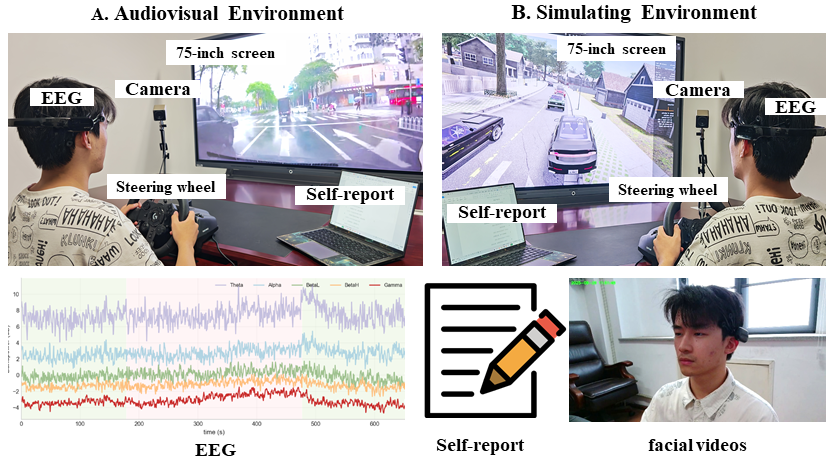

R3-Ftg Dataset

Self Report / EEG Response
R3-Ftg Dataset
Self Report / EEG Response
Road rage poses great risks to road safety. Digital interventions show promising potential in regulating rage-related maladaptive behaviors to mitigate such risks. This requires a clear understanding of road rage dynamics. Unlike prior work using artificial scenarios, we build the first-of-its-kind Real Road Rage Footage (R3-Ftg) dataset and recreate some of its most risky and anger-inducing scenes in both audiovisual and simulating environments. Then we recruit 60 participants to experience those scenes and record their rage in subjective and objective measures. We find: (1) Road rage has been successfully induced, and simulation provides more realistic experiences. (2) Slow-rise-fast-decay phenomena are observed in both stimuli, suggesting a spring-like process of road rage. (3) This process can be modeled using second-order damped oscillation distributions. To our knowledge, we are the first to model road rage dynamics in authentic scenarios recreated from real-world events, enabling a paradigm shift from learning-based to model-based digital solutions.